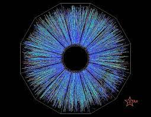

A Força Fraca possui dois bósons intermediadores: o W Bóson e o Z Bóson.
importancia dos Bósons da Força Fraca
Os Bósons W e Z são os bósons mediadores da força nuclear fraca, e se diferem apenas pela carga de atuação: os bósons W atuam como mediadores em interações fracas de partículas carregadas, sendo W+ para as partículas carregadas negativamente ou W- para as partículas carregadas positivamente.